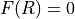
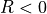
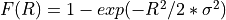
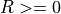
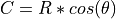
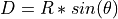
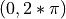
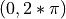

Add Noise Plugin
Add Noise Introduction
The purpose of the AddNoise plugin is to introduce random noise to Tellurium data.
Noise generation uses the fact that a Rayleigh-distributed random variable R, with the probability distribution  if  and  if , is related to a pair of Gaussian variables C and D through the transformation  and , where  is a uniformly distributed variable in the interval 1.
is a uniformly distributed variable in the interval 1.
Currently only Gaussian noise is implemented.
1 From Contemporary Communication Systems USING MATLAB(R), by John G. Proakis and Masoud Salehi, published by PWS Publishing Company, 1998, pp 49-50.
Add Noise Plugin Properties
InputData: Data on which noise will be applied to.
Sigma: Size of applied noise. Noise is generated for each single data value, with a probability corresponding to a Gaussian distribution, centered around the value, and with a variance equal to
 .
.NoiseType: Type of noise applied on data. Only Gaussian noise is currently supported.
Progress: The progress property communicates the progress (in percent) of Noise application.
Add Noise Plugin Events
The AddNoiseplugin uses all of the available plugin events, i.e. the PluginStarted, PluginProgress and the PluginFinished events. The available data variables for each event are internally treated as pass trough variables, so any data, for any of the events, assigned prior to the plugin’s execute function (in the assignOn() family of functions), can be retrieved unmodified in the corresponding event function.
PluginStarted: Signals to application that the plugin has started applying noise on data. Both parameters are pass through parameters and are unused internally by the plugin.
PluginProgress: Communicates progress of noise generation. Both parameters are pass through parameters and are unused internally by the plugin.
PluginFinished: Signals to application that execution of the plugin has finished. Both parameters are pass through parameters and are unused internally by the plugin.
The execute Function
The execute() function will apply noise to all rows and columns of the assigned data, with one exception. Data not affected are data in the first column, and if, and only if, its column header equals ”time” (case insensitive). The execute method supports a boolean argument indicating if the execution of the plugin work will be done in a thread, or not. Threading is fully implemented in the AddNoise plugin. The inThread argument defaults to false.
Python examples
Add noise to data acquired from RoadRunner
The python script below shows how to acquire simulation data from RoadRunner and pass it to the noise plugin. The format of this data, which is obtained from the simulate() function, is not directly compatible with the Noise plugin’s InputData property. This incompatibility is handled by an intermediate data structure in Python, called DataSeries.
import roadrunner
import rrplugins as tel
try:
# Create a roadrunner instance and create some data
rr = roadrunner.RoadRunner()
rr.load("sbml_test_0001.xml")
data = rr.simulate(0, 10, 511) # Want 512 points
#Add noise to the data
noisePlugin = tel.Plugin("tel_add_noise")
# Get the dataseries from data returned by roadrunner
d = tel.getDataSeries(data)
# Assign the dataseries to the plugin inputdata
noisePlugin.InputData = d
# Set parameter for the ’size’ of the noise
noisePlugin.Sigma = 3.e-6
# Add the noise
noisePlugin.execute()
# Get the data to plot
noisePlugin.InputData.plot()
except Exception as e:
print('Problem: ' + `e`)
Visualization of the noise distribution used in the AddNoise plugin
The Python script below demonstrates how to obtain and visualize the actual distribution (Gaussian) of noise that is applied on data.
import roadrunner
import rrplugins as tel
import matplotlib.pyplot as plt
import scipy.stats as stats
p = tel.Plugin ("tel_add_noise")
value = 2.34 #This will be the mean
n = 80000
inputData = np.zeros (shape=(1,2))
inputData[0] = [0, value]
data = tel.DataSeries.fromNumPy (inputData)
p.Sigma = 0.25
outArray = []
for i in range(n):
p.InputData = data
p.execute()
outValues = p.InputData.toNumpy
outArray.append(outValues[0][1])
plt.hist(outArray, 200, normed=True)
# Overlay analytical solution
aRange = np.arange(min(outArray), max(outArray), 0.001)
plt.plot(aRange, stats.norm.pdf(aRange, value, p.Sigma), linestyle=’--’, linewidth=’2’, color=’red’)
plt.show()